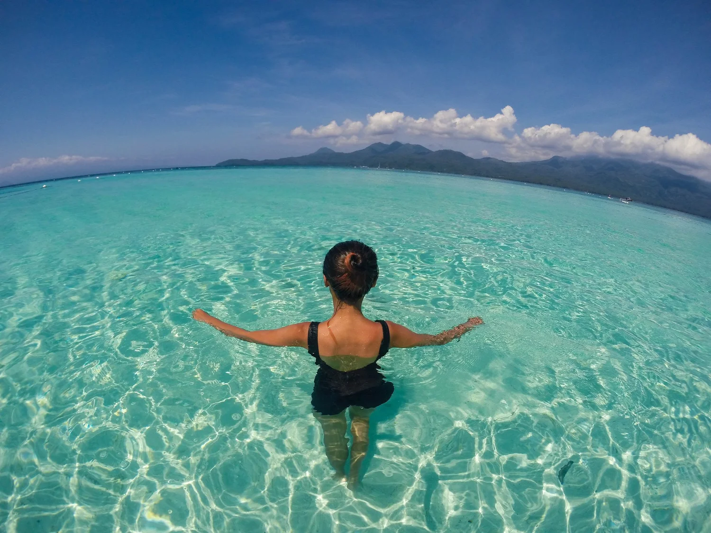
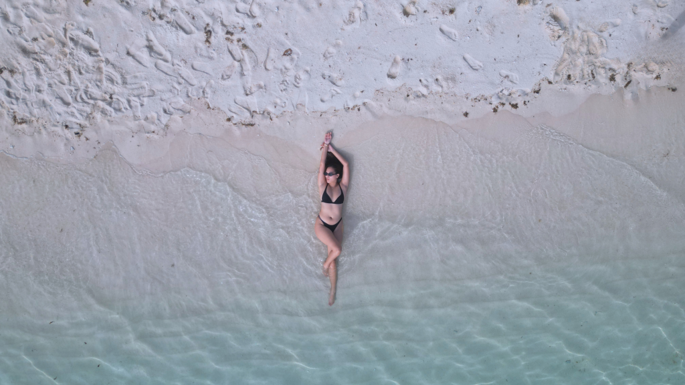

Swim in Paradise
Camiguin's coastline is a swimmer's paradise. The island is ringed with clean, uncrowded beaches that offer calm and clear waters ideal for a relaxing dip or a full day of swimming. Unlike many tourist destinations in the Philippines, Camiguin's beaches remain relatively undeveloped, giving visitors a sense of discovery and tranquility that is increasingly rare.
The volcanic geology of the island has created several unique swimming spots beyond the typical sandy beach. Natural freshwater pools, tidal pools, and calm lagoons can be found around the island, each offering a slightly different and memorable swimming experience surrounded by lush tropical scenery.


Best Beaches
Yumbing Beach near White Island, Tangub Beach in Sagay, and Agoho Beach in Mambajao are among the most popular and accessible beaches on the island.
Swimming Conditions
Waters are generally calm from November to June. The southwest monsoon from July to October can bring rougher surf. Always check local conditions before swimming.
Tips
Most beaches on the island are public and free to access. Bring your own supplies as beach vendors are limited. Respect the marine environment and avoid disturbing coral reefs.